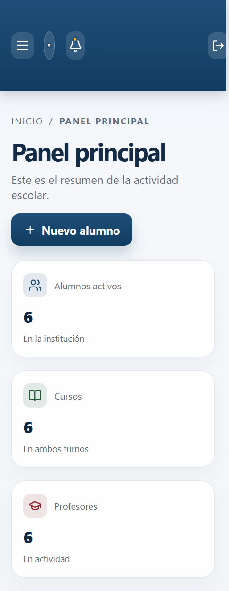
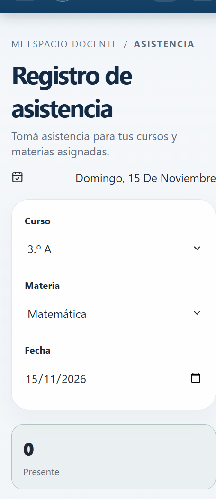

Proyecto Integrador · PDISWDPresentación final · 2026
SISTEMA DE GESTIÓN ESCOLAR
ColegioGest
Una plataforma para centralizar la información académica y facilitar el trabajo de administración, docentes y alumnos.
Vue 3Vue RouterSupabase AuthPostgreSQL + RLS
01 · Problema y objetivosColegioGest
¿Qué necesidad resuelve?
Cuando la información escolar se dispersa en planillas y documentos, aparecen duplicados, errores, demoras y riesgo de pérdida.
Centralizar
Personas, cursos, materias y actividad académica en un solo sistema.
Organizar
Conservar inscripciones y registros sin perder historial.
Proteger
Mostrar a cada rol solo la información que le corresponde.
Facilitar
Permitir consultas de notas, asistencias, tareas y avisos desde web.
3roles coordinados
Administrador · Profesor · Alumno
Objetivo: transformar procesos manuales dispersos en flujos trazables y seguros.
02 · UsuariosColegioGest
Un espacio para cada perfil
Administrador
Gestiona alumnos, profesores, usuarios, cursos, materias, asignaciones e inscripciones. Supervisa notas, actividades y avisos.
Gestión institucional
Profesor
Consulta sus cursos y alumnos; registra asistencia y calificaciones; publica actividades y avisos para sus grupos.
Trabajo docente
Alumno
Consulta sus datos, materias, notas, asistencias, actividades y avisos. No puede cambiar sus registros académicos.
Consulta personal
Autorización en dos capas: menú/rutas en Vue Router y políticas Row Level Security (RLS) en PostgreSQL.
03 · FuncionalidadesColegioGest
De la administración a la consulta
Administración
- CRUD de alumnos, profesores, cursos, materias y asignaciones.
- Inscripciones con historial y bajas lógicas.
- Gestión de usuarios/roles y avisos.
Docencia y alumnado
- Asistencia por curso, materia y fecha; edición sin duplicar.
- Calificaciones con rango 1–10.
- Actividades con estado de entrega y avisos por curso.
- Consultas de notas/asistencia propias.
La entrega de una actividad registra el estado “Entregada”; no incluye carga de archivos. La recuperación por correo depende de configurar Redirect URL/SMTP.
04 · ArquitecturaColegioGest
Vue organiza la experiencia; Supabase protege los datos
Vue Router
rutas por rol
Views + Components
pantallas y formularios
Stores
sesión y avisos
↓
Services / school.js
consultas y RPC
Mappers + errors
filas y mensajes
↓ HTTPS · publishable key · JWT
Supabase Auth
PostgreSQL + RLS
Views + RPC + Triggers
Nunca se usa `service_role` en el navegador. Los permisos se validan también en la base, no solo ocultando botones.
05 · Modelo de datosColegioGest
Entidades y relaciones principales
inscripciones
asignaciones
asistencias
calificaciones
actividades
Decisiones de diseño
- Usuario–Alumno/Profesor: relación 1 a 0..1, datos personales normalizados.
- Alumno–Curso: N:M por `inscripciones`, con historial y una sola activa.
- Materia–Curso–Profesor: N:M:N por `asignaciones` y ciclo lectivo.
- Entregas: une actividad y alumno; evita duplicar entregas.
- PK UUID, FK, restricciones CHECK e índices únicos refuerzan integridad.
12 tablas principales: usuarios, alumnos, profesores, cursos, materias, asignaciones, inscripciones, calificaciones, asistencias, actividades, entregas_actividades y avisos.
06 · SeguridadColegioGest
Seguridad aplicada en varias capas
Autenticación
Supabase Auth, perfil consultado al iniciar sesión, cierre de cuentas inactivas y logout tras 30 minutos sin actividad en la aplicación.
RLS
El alumno consulta datos propios; el docente opera sobre asignaciones; el administrador gestiona usuarios y catálogos.
Reglas en PostgreSQL
Notas 1–10, asistencias válidas, una inscripción activa, integridad de asignaciones y bloqueo de fechas futuras.
Hardening 009–010
Bloqueo de edición propia; no se desactivan docentes asignados; altas sin contraseña predeterminada; creación de administradores restringida.
Alcance de la evidencia: migraciones 001–010 aplicadas y catálogos/permisos inspeccionados. Las pruebas negativas de escritura deben repetirse en Supabase de pruebas.
07 · PantallasColegioGest
La información adecuada en cada pantalla
Panel administrativo
Indicadores, accesos rápidos a alumnos, cursos e inscripciones y avisos recientes.

Trabajo docente
Selección de curso, materia y fecha; búsqueda de alumnos y estados de asistencia.

08 · Demostración funcionalGuion sugerido
Un flujo de punta a punta
1 · Administrador
- Revisa cursos y materias.
- Registra o habilita a un alumno.
- Lo inscribe en un curso y asigna docente/materia.
2 · Profesor
- Abre Mis cursos.
- Toma asistencia para hoy.
- Carga una calificación y publica actividad/aviso.
3 · Alumno
- Consulta su asistencia y nota.
- Lee actividad y aviso de su curso.
- Marca actividad entregada.
Demostración segura: realizar escrituras solo con registros descartables en un proyecto de pruebas; consultar como cada rol con cuentas autorizadas.
Usar las cuentas del seed únicamente en el entorno de demostración. No mostrar datos personales ni modificar datos académicos reales durante la defensa.
09 · Código relevanteCómo se conectan las capas
Tres decisiones de implementación
Vue Router · guard
`src/router/index.js` · protege rutas privadas y valida `meta.roles`.
if (!session.user) return { name: 'login' }
if (to.meta.roles && !to.meta.roles.includes(session.user.role))
return { name: 'access-denied' }
Supabase · upsert
`src/services/school.js` · evita duplicar la toma de asistencia.
from('asistencias').upsert(records, {
onConflict:
'id_alumno,id_curso,id_materia,fecha'
})
PostgreSQL · política
Migración 009 · el usuario no actualiza su propia fila.
using (cuenta_activa()
and es_admin()
and id <> auth.uid())
El guard mejora navegación; RLS y triggers son la protección autoritativa. Los servicios no contienen `service_role`.
10 · Dificultades y resultadosColegioGest
Qué se resolvió y qué falta medir
Dificultades y soluciones
- Mock sin persistencia → PostgreSQL real y seed reproducible.
- Permisos solo en UI → RLS, RPC administrativas y triggers.
- Datos propios editables indebidamente → política 009 y trigger.
- Baja docente sin revisar asignaciones → guarda transaccional.
- Fechas futuras/contraseña predeterminada → validación UI y base, alta explícita.
Resultados y límites
- Build de producción aprobado.
- Migraciones 001–010 aplicadas.
- Pruebas históricas de integración aprobadas; nuevas pruebas de filtros y roles realizadas.
- Falta CRUD manual completo, test negativo post-009/010 y métricas RNF.
- Correo real depende de SMTP; backup/restore no probado.
11 · Futuro y cierreGracias
COLEGIOGEST
Una base segura para seguir creciendo
La versión actual resuelve la gestión académica central y separa el acceso por rol.
Mejoras futuras
- RF20 · reportes PDF/Excel.
- RF21 · notificaciones por correo.
- RF22 · boletín automático.
- RF23 · acceso para tutores.
- También: entrega de archivos, rendimiento medido y auditoría WCAG completa.
Para defender: explicar qué está probado, qué se basa en evidencia histórica y qué se debe probar en un entorno aislado. No presentar pendientes como aprobados.